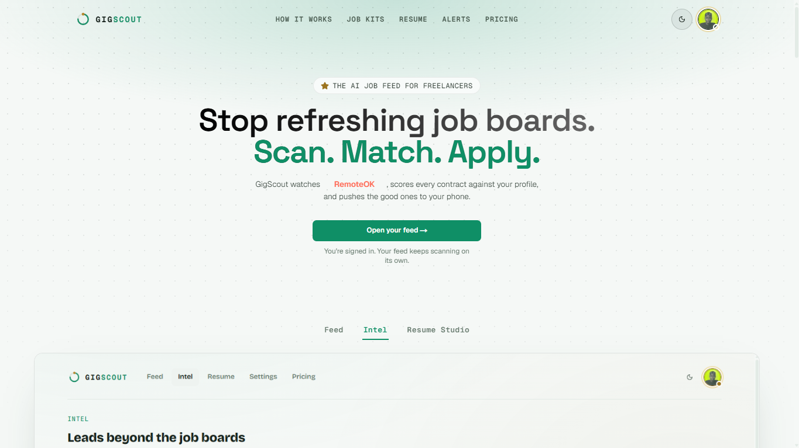
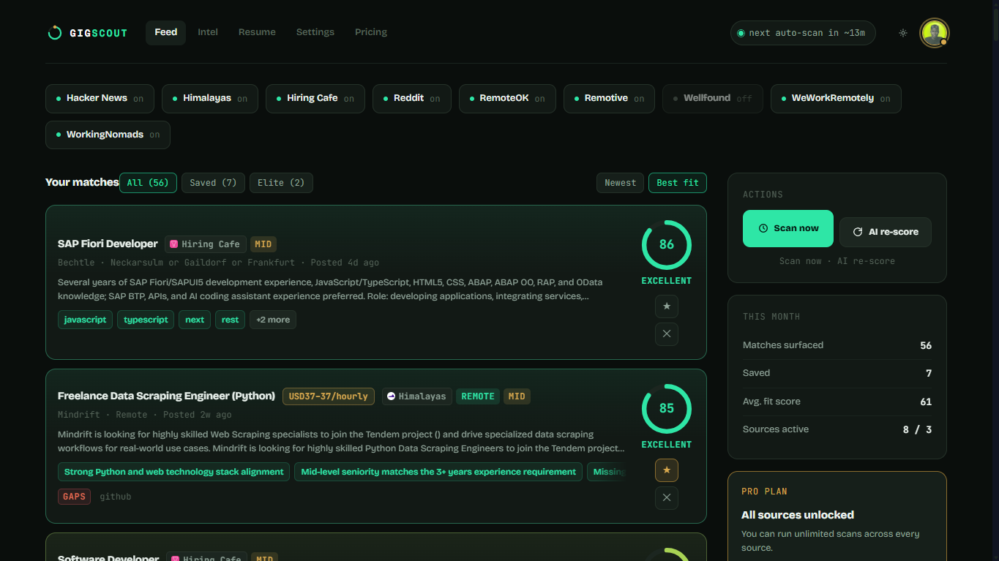
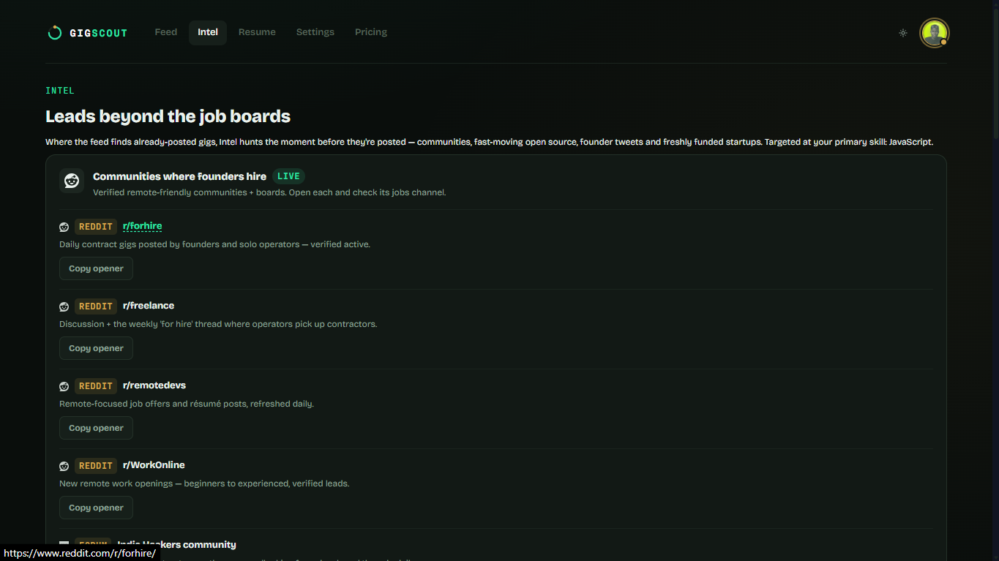
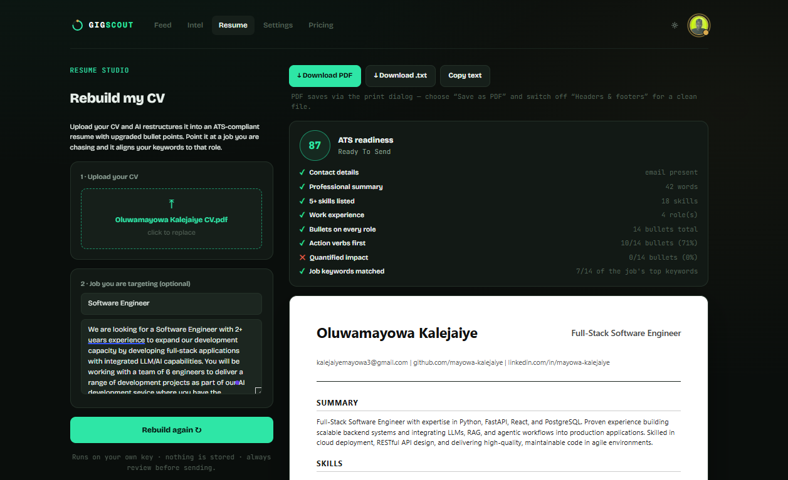
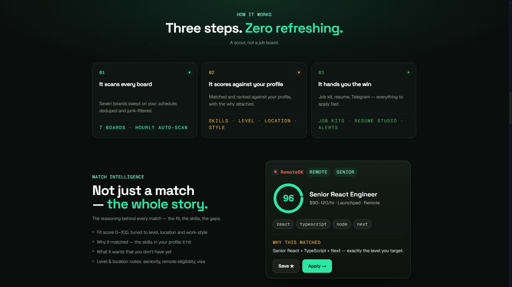

GigScout
An AI job feed that scans eight boards, scores every listing against your real skill profile, and hands you a strong match and a ready application together—delivered to your phone.





Context
Freelance job hunting means checking eight different boards manually, scrolling past hundreds of posts to find the handful worth applying to, then writing a fresh pitch for each one from scratch.
What I built
An AI job feed that scans Remotive, Working Nomads, WeWorkRemotely, Reddit, RemoteOK, Himalayas, and Hacker News on an hourly cycle, scores every listing against a user’s real skill profile, and surfaces only the matches worth their time. The free tier runs rule-based scoring across three boards. The paid tier, five dollars a month, unlocks all seven boards, AI-scored fit using the user’s own API key, and AI-generated job kits—tailored resume bullets, an outreach pitch, and ready-to-send message templates built around the specific posting. A Telegram bot pushes fresh matches directly to a user’s phone, flagging elite roles the moment they surface.
Why this approach
Most job board tooling stops at filtering. The bigger cost isn’t finding a fit, it’s the hour spent writing a pitch after you’ve found one. Building the job kit generation directly into the scoring pipeline collapses that gap, so a strong match and a ready application arrive together instead of as two separate steps a user has to do themselves.
Role & scope
End to end: the multi-source scanning architecture, the scoring engine, the BYOK AI integration, the job kit generation, and the Telegram bot.
Result
A live, paid product, tested end to end by hand before launch—sign-in through match through generated job kit through Telegram alert.